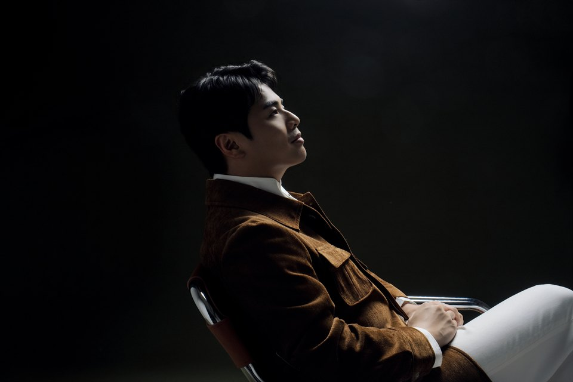
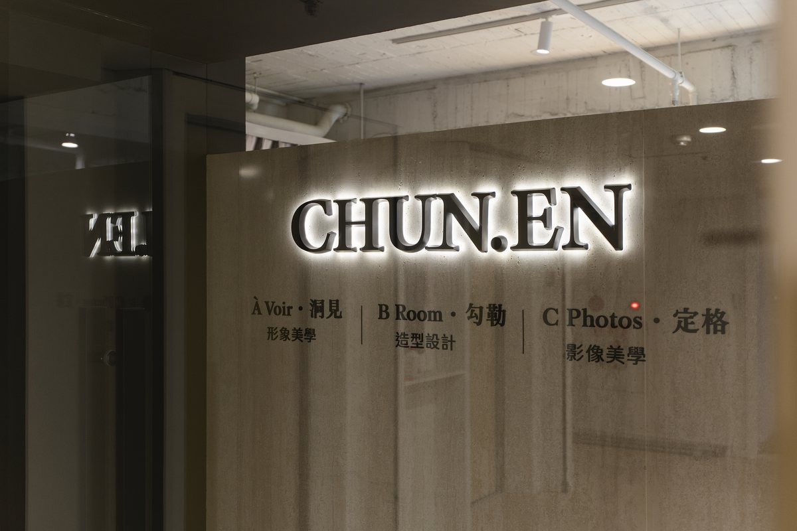
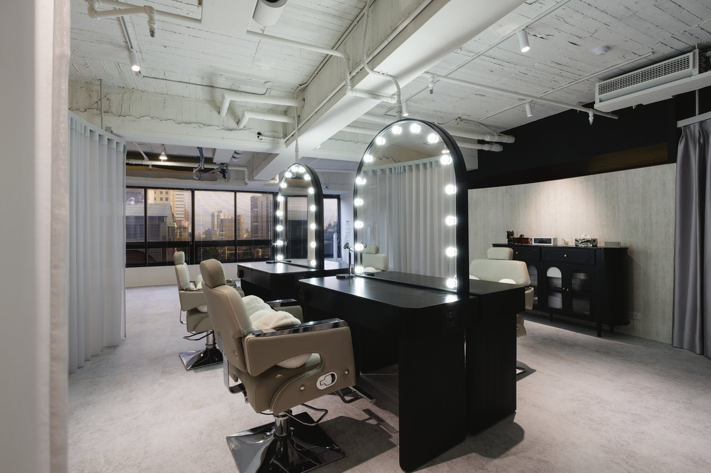
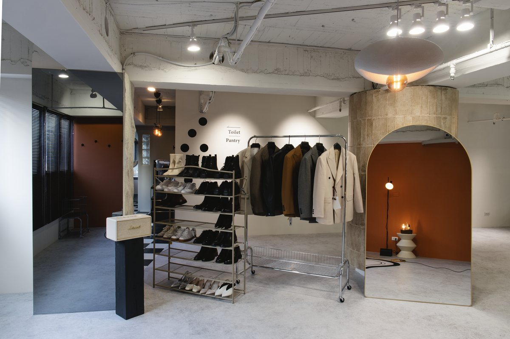
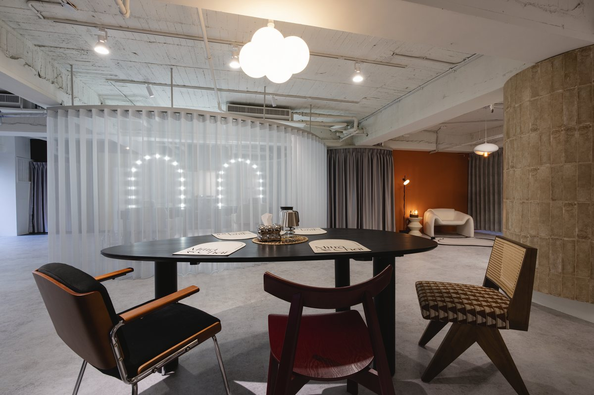
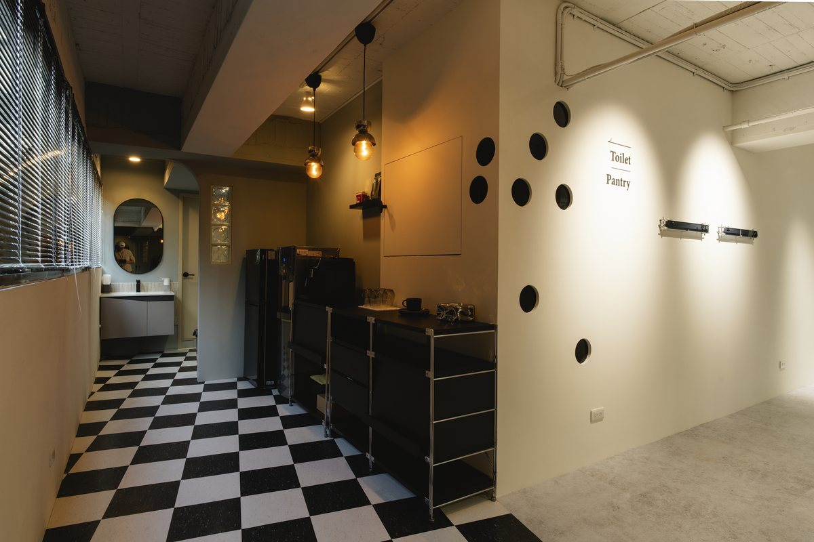
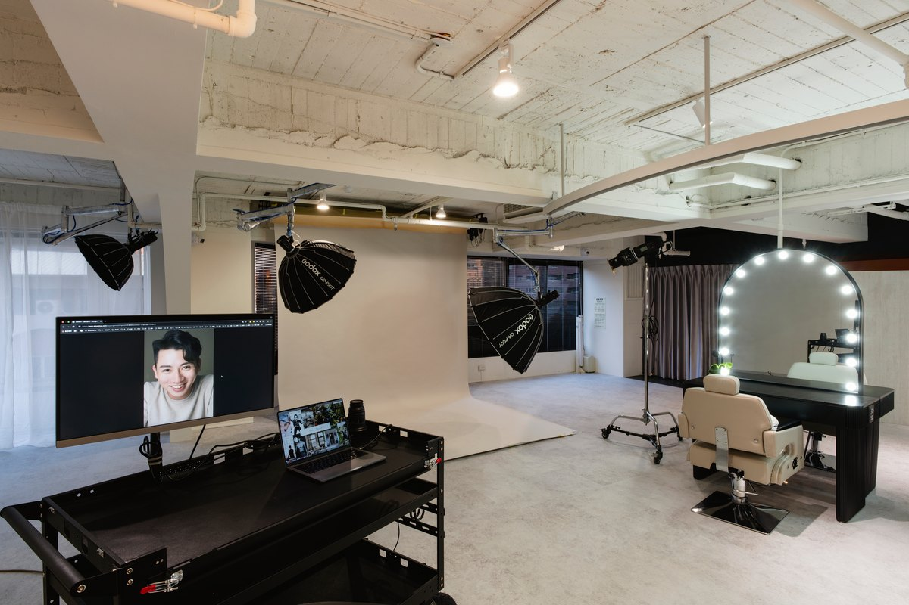
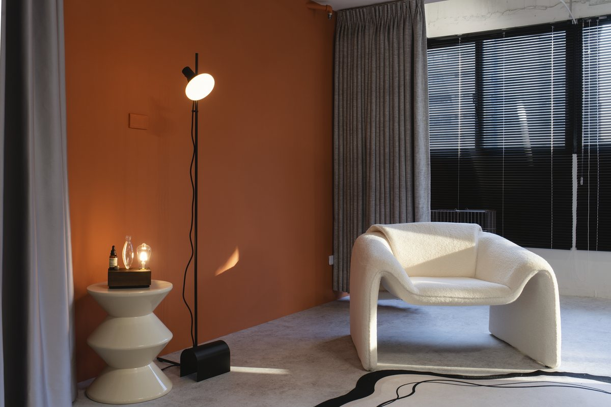
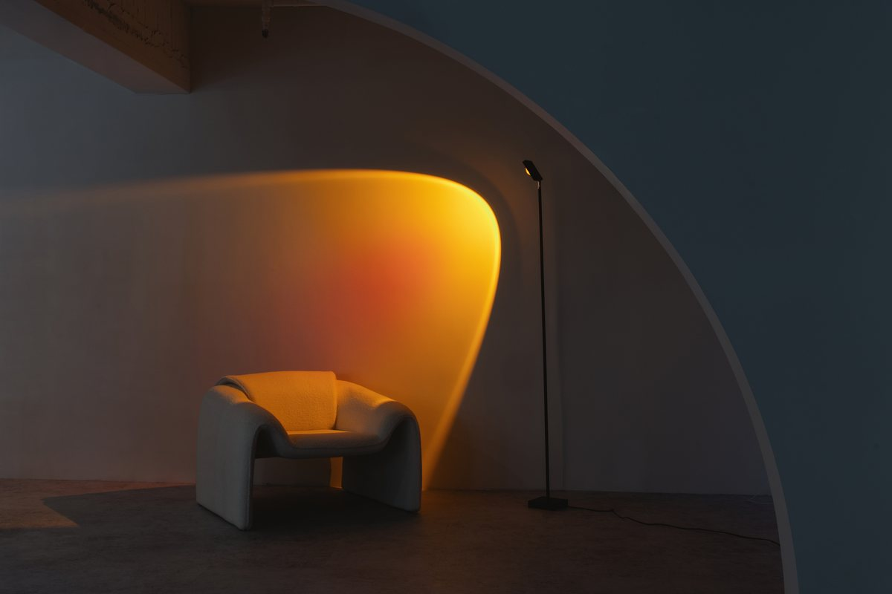

個人專業影像
為專業人士、主管與講師，建立可用於官網、LinkedIn、講師介紹與媒體資料的影像。

C.photos·Deliver
Images designed as long-term assets.
照片最後會被放在哪裡，決定它該怎麼拍。無論是專業形象、品牌內容，或想留下的人生階段，我們都先確認用途，再安排構圖、光線與呈現方式。
C.photos 是 CHUN.EN 的影像服務，涵蓋個人專業形象、品牌內容、企業團隊，以及個人寫真與家庭紀錄。
在台中拍形象照，最常被跳過的一步是先問用途。同一張臉放在官網、LinkedIn 或提案簡報上，需要的構圖與正式度並不相同；要留給自己和家人的照片，重點又完全不在這些地方。先把這件事確認清楚，拍攝當天才知道要拿到哪幾種畫面，而不是拍完才發現少了想用的那一張。
為專業人士、主管與講師，建立可用於官網、LinkedIn、講師介紹與媒體資料的影像。
官網主視覺、社群內容與品牌故事。動態的形象影片與訪談影像，依用途另行規劃。
團隊合照、主管人物照與招募素材。統一光線、構圖與後製規格，日後可延續補拍。
不是每一次拍攝都為了工作。個人寫真、伴侶與家庭紀錄，依你想留下的樣子規劃。
確認照片的用途、主要版位、造型數與精修張數，由諮詢團隊建議合適的方案範圍。
確認服裝、妝髮、背景與構圖方向，並提供拍攝前的準備說明。
B.room 的妝髮造型與影像拍攝於勤美店一次完成，現場依你的狀態與畫面需求即時調整。
拍攝過程中會分段檢視畫面，確認符合預定用途，並在當天完成方案內的選片。
精修完成後以雲端連結交付高畫質影像，並附上影像部署模擬器。
如果需要的不只是拍攝，而是從角色定位、服裝選品到髮型與妝髮方向一次整合，歡迎參考 CHUN.EN Signature 商業視覺整合企劃。
CHUN.EN 台中勤美店，西區臺灣大道二段 300 號 A 棟 6F-1 →。妝髮造型、換裝與影像拍攝，在同一個空間完成。








左右滑動，看更多空間 →
以下是交件時實際會拿到的內容。
各方案包含的工作範圍不同，以下是各項服務的參考價格。
完整方案可於 LINE 諮詢時提供。